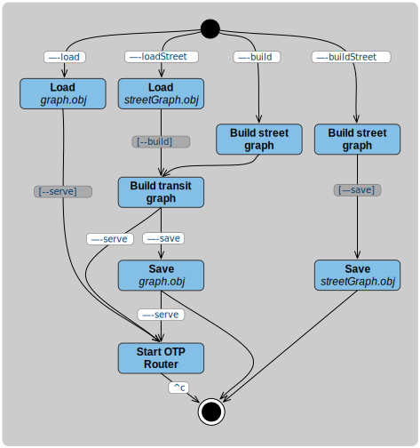

OpenTripPlanner Basic Tutorial
This page should allow you to set up and test your own OTP2 server. If all goes well it should only take a few minutes!
Get Java
As a Java program, OTP must be run within a Java virtual machine (JVM), which is provided as part of
the Java runtime (JRE) or Java development kit (JDK). OTP2 is compatible with Java 17 or later. We
recommend running on Java 17 rather than a later version, as it is a long-term support release.
Run java -version to check that you have version 17 or newer of the JVM installed. If you do not,
you will need to install a recent OpenJDK or Oracle Java package for your operating system.
Get OTP
OpenTripPlanner is written in Java and distributed as a single runnable JAR file. This is a "shaded"
JAR containing all other libraries needed for OTP to work, and is available from the Maven Central
repository. You will be able to go
to the OTP directory at Maven Central,
navigate to
the directory for the 2.1 release,
and download
the file whose name ends with shaded.jar
.
You may also want to get your own copy of the OTP source code
and build a bleeding edge development JAR from scratch, especially if you plan to
do some development yourself. In that case, check out the branch dev-2.x.
Get some data
GTFS for Transit Schedules and Stops
First you'll need GTFS data to build a transit network. There's an excellent description of the GTFS
format here. Transport agencies throughout the world provide GTFS schedules to
the public. Transitland has a
registry of feeds and TransitFeeds
also provides an extensive catalog. The best option is often to simply fetch the data directly from
a transit operator or agency. If you know of a feed you want to work with, download it and put it in
an empty directory you have created for your OTP instance such as /home/username/otp on
Linux, /Users/username/otp on MacOS, or C:\Users\username\otp on Windows. For OTP2 to detect a
GTFS file, its name must end in .zip and must contain the letters 'gtfs'. We often use the
convention of saving GTFS files with names ending in .gtfs.zip which meets both these criteria,
reflecting the fact that a GTFS feed is just a ZIP file containing a specific set of files. If you
don't have a particular feed in mind, the one for Portland, Oregon's TriMet agency is a good option.
It is available at this URL. This is a
moderate-sized input of good quality (TriMet initiated OTP development and helped develop the GTFS
format). On Linux, this could be done on the command line as follows:
$ cd /home/username
$ mkdir otp
$ cd otp
$ wget "http://developer.trimet.org/schedule/gtfs.zip" -O trimet.gtfs.zip
OSM for Streets
You'll also need OpenStreetMap data to build a road network for walking, cycling, and driving. OpenStreetMap is a global collaborative map database that rivals or surpasses the quality of commercial maps in many locations. Several services extract smaller geographic regions from this database. Interline Technologies maintains a collection of extracts updated daily for urban areas around the world . Geofabrik provides extracts for larger areas like countries or states, from which you can prepare your own smaller bounding-box extracts using Osmosis , osmconvert, or (our favorite) Osmium-Tool. OSM data can be delivered as XML or in the more compact binary PBF format. OpenTripPlanner consumes only PBF because it's smaller and more efficient.
Download OSM PBF data for the same geographic region as your GTFS feed, and place this PBF file in the same directory you created for the OSM data. If you are using the TriMet GTFS feed, you could download the Geofabrik extract for the US state of Oregon , then further trim that to just the TriMet service area using the bounding box switch of one of the above tools. On Linux or MacOS you could do that as follows:
$ cd /home/username
$ wget http://download.geofabrik.de/north-america/us/oregon-latest.osm.pbf
$ osmconvert oregon-latest.osm.pbf -b=-123.043,45.246,-122.276,45.652 --complete-ways -o=portland.pbf
$ mv portland.pbf otp
We find this tool useful for determining the geographic
coordinates of bounding boxes. The CSV option in that tool produces exactly the format expected by
the osmconvert -b switch. The --complete-ways switch is important to handle roads that cross
outside your bounding box.
If you have extracted a smaller PBF file from a larger region, be sure to put only your extract (not the original larger file) in the directory with your GTFS data. Otherwise OTP will try to load both the original file and the extract in a later step. See the page on preparing OSM data for additional information and example commands for cropping and filtering OSM data.
Starting OTP
A typical command to start OTP looks like java -Xmx2G -jar otp.shaded.jar <options>. The
-Xmx parameter sets the limit on how much memory OTP is allowed to consume. GTFS and OSM data sets
are often very large, and OTP is relatively memory-hungry. You will need at least 1GB of memory when
working with the Portland TriMet data set, and several gigabytes for larger inputs. If you have
sufficient memory in your computer, set this to a couple of gigabytes (e.g. -Xmx2G). Java uses
a garbage collection approach
to memory management, which requires some "breathing room" to efficiently operate. Without
sufficient free memory OTP can grind to a halt. VisualVM is a good way
to inspect Java memory usage, especially with
the VisualGC plugin.
Building Graphs
There are two main phases to preparing and deploying an OTP server. The first is to analyze the GTFS, OSM and any other inputs (such as elevation data) and build a representation of the transportation network. Following mathematical terminology we call this a 'graph', and refer to this phase as "graph building". The second phase is to start a server that provides trip planning and other API services for this graph.
It is possible to save the graph to a file on disk after the first phase, then load the graph from the file in the second phase. This allows restarting the server or starting multiple instances of the server without repeating the often time-consuming process of building the graph. It is also possible to split the graph building process into separate OSM and GTFS stages for similar reasons: to allow reusing results from slow processes, such as applying elevation data to streets. These different options are controlled with command line switches, and will be described in more detail below and in other tutorials.
Simple One-step Server
The simplest way to use OTP is to build a graph in a single step and start a server immediately, without saving it to disk. The command to do so is:
$ java -Xmx2G -jar otp-2.2.0-shaded.jar --build --serve /home/username/otp
where /home/username/otp should be the directory where you put your configuration and input files.
If you're using the Portland input data, the graph build operation should take about one minute to
complete, and then you'll see a Grizzly server running message. At this point you have an
OpenTripPlanner server running locally and can open http://localhost:8080/
in a web browser. You should be presented with a Javascript client application that will interact
with your local OpenTripPlanner instance.
This map-based user interface is in fact sending HTTP GET requests to the OTP server running on your
local machine. It can be informative to watch the HTTP requests and responses being generated using
the developer tools in your web browser. OTP's built-in web server will run by default on ports 8080
and 8081 for HTTP and HTTPS respectively. If by any chance some other software is already using one
or both of those port numbers, you can specify different port numbers with switches
like --port 8801 --securePort 8802.
Saving a Graph
If you want speed up the process of repeatedly starting up a server with the same graph, you can
build a graph from street and transit data then save it to a file using the --build and --save
command line parameters together. If for example your current working directory (.) contains the
input files and the OTP JAR file, you can use this command:
$ java -Xmx2G -jar otp-2.2.0-shaded.jar --build --save .
This will produce a file called graph.obj in the same directory as the inputs. The server can then
be started later using the --load parameter, and will read this file instead of building the graph
from scratch:
$ java -Xmx2G -jar otp-2.2.0-shaded.jar --load .
Another reason to perform these two phases separately is that the building process loads the entire GTFS and OSM data sets into memory, so can require significantly more memory than just running a server. Accordingly, you may want to perform the build on one machine (e.g. a throw-away cloud instance with more memory or compute capacity), then copy the resulting graph file to one or more smaller machines to serve the API.
Layering GTFS onto OSM
Building the street graph (especially with elevation data) can take a long time. It is common for transit data to change more frequently than street data, so it can be convenient to build the street graph once, and then layer transit data on top of the streets to make the final graph.
Again assuming the input files and OTP JAR file are in the current working directory, you can build a street graph with OSM and elevation data only (ignoring transit input files) with this command:
$ java -Xmx2G -jar otp-2.2.0-shaded.jar --buildStreet .
Then, to build a graph layering transit data on top of the saved street graph (built using the previous command):
$ java -Xmx2G -jar otp-2.2.0-shaded.jar --loadStreet --save .
Finally, the server can be started using the --load parameter:
$ java -Xmx2G -jar otp-2.2.0-shaded.jar --load .
Command Line Switches
The flow diagram below summarizes all the command line switches used in the above examples, and how they control which actions are taken when OTP starts up.

You must use at least one of the required parameters: --load, --loadStreet, --build
, --buildStreet. A required parameter may imply other parameters when the flow allows for no
other choice. For example, --load implies --serve, so --serve is not necessary and has no
additional effect when used together with --load.
You can run the OTP .jar file with the --help option for a full list of command line parameters.